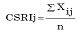

Paper Title :
The Impact of Implementing New Policy of the
Republic Indonesia in Improving Transparency
Corporate Social Responsibility Disclosure
Abstract
The objectives of this research are to analyze
the differences of transparency of Corporate Social
Responsibility disclosures before and after the
implementation of the Law of the Republic Indonesia
Number 40 Year 2007. Variable used in this researchis
Corporate Social Responsibility Disclosure Index. The
populations used in this research are all manufacturing
companies listed on the Bursa Efek Indonesia since 2004
to 2010 successively. The samples are selected based on
purposive sampling method. There are 77 data that
meets the criteria as the research samples. The analysis
method used to tested hypothesis in this research is
Paired Sample T-Test.
The result of this research shows that there are
differences in Corporate Social Responsibility disclosure
transparency before and after the Corporate Social
Responsibility disclosure obliged. The results of research
indicate that government policies in Corporate Social
Responsibility disclosure can increase the transparency
of Corporate Social Responsibility disclosure and total
asset turnover.
Author:
Monica Weni Pratiwi
Program Studi Akuntansi
Fakultas Ekonomi dan Ilmu Sosial Universitas Bakrie
Jakarta, Indonesia
Paper Transcript of Paper Titled :
The Impact of Implementing New Policy of the Republic Indonesia in Improving Transparency Corporate Social Responsibility Disclosure
The Impact of Implementing New Policy of the Republic Indonesiain Improving Transparency Corporate Social Responsibility Disclosure
Monica Weni Pratiwi
Program Studi Akuntansi
Fakultas Ekonomi dan Ilmu Sosial Universitas Bakrie
Jakarta, Indonesia
Abstract— The objectives of this research are to analyze the differences of transparency of Corporate Social Responsibility disclosures before and after the implementation of the Law of the Republic Indonesia Number 40 Year 2007. Variable used in this research is Corporate Social Responsibility Disclosure Index. The populations used in this research are all manufacturing companies listed on the Bursa Efek Indonesia since 2004 to 2010 successively. The samples are selected based on purposive sampling method. There are 77 data that meets the criteria as the research samples. The analysis method used to tested hypothesis in this research is Paired Sample T-Test.
The result of this research shows that there are differences in Corporate Social Responsibility disclosure transparency before and after the Corporate Social Responsibility disclosure obliged. The results of research indicate that government policies in Corporate Social Responsibility disclosure can increase the transparency of Corporate Social Responsibility disclosure and total asset turnover.
Keywords: Corporate Social Responsibility, Corporate Social Responsibility Disclosure Index.
Introduction
The reporting of environmental management by companies is an important factor in the management of environmental transparency. A company is as one of the main contributors to the economic growth of a country, as well as the dominant contributor to the environmental problems that is caused by the process of production that uses natural sources (Ja’far, 2008). Environmental management disclosure in the annual report is a form of Corporate Social Responsibility (CSR) to determine the ecological impact on a company's economic performance.
Indonesian Government makes the rules that encourage the creation of environmental performance and encourage go public companies to report environmental management in the company's annual report (Nurlela & Islahuddin, 2008). The regulation that is related to the environment has begun to be applied in Indonesia. The awareness of the need to preserve the environment is regulated by Law No. 40 of 2007 on Limited Liability Company (Perseroan Terbatas/ PT) especially in Article 66 and Article 74, which state that companies conducting business in the field of natural resources or related natural resources are required to conduct CSR.
The report of CSR by companies in Indonesia before 2007 was still a voluntary disclosure. As the reporting is voluntary, governments, companies, and communities would be throwing the responsibility on the issue of environmental damage to each other. After 2007, the perception of CSR was slowly shifting from voluntary to the form of action on the basis of moral and legal obligation.
Companies are increasingly compelled to disclose CSR in its annual report by the government regulations that require the disclosure of CSR. Before the CSR disclosure was required in 2007, the transparency of CSR disclosure of companies was quite low. The results of a research conducted by Yuniarti (2003) states that companies listed on the Stock Exchange prior to the date December 31, 2000 had a low level of CSR disclosure. However Ja'far and Amalia (2006) state that the seriousness of public companies in managing the environment began to raise.
Based on the explanation, this study develops a theoretical and empirical framework related to the differences of CSR disclosures transparency before and after the implementation of the Law of Republic Indonesia Number 40 of 2007. Therefore this study investigates whether there are differences in CSR disclosure transparency before and after the CSR disclosures are required. Being based on CSR disclosure transparency before and after the CSR disclosures are required, this study empirically investigates the phenomena related to the claim that there are differences in CSR disclosure transparency before and after the CSR disclosures are required.
Literature Review
Corporate Social Responsibility Disclosure
CSR is the mechanism for an organization to voluntarily integrate social and environmental concerns into its operations and interaction with stakeholders, which exceeds the organizational responsibilities in the field of law (Anggraini, 2006). CSR, according to Suharto (2008) is a business operation that is committed not only to increase the company's profit financially, but also for socio-economic development of the region holistically, institutionalized, and sustainable. Some other names that are similar and often associated with CSR is corporate giving, corporate philanthropy, corporate community relations, and community development. In terms of motivation, these four terms can be interpreted as a dimension or approach to CSR. A company conducts corporate giving based on charity principle. The second dimension of CSR is corporate philanthropy which is based on the principles of humanity. The third dimension of the CSR is corporate community relations which is conducted to create a harmonious and balanced company relationship, and in accordance with the environment, values, norms, and culture of the local community. The last dimension of CSR is community development which is based on the concern of community development.
The term CSR was becoming more popular in the 1970s, especially after the book Cannibals with Forks appeared: "The Triple Bottom Line in 21st Century Business" (Elkington, 1997). Elkington (1997) developed the three essential components of sustainable development, namely economic growth, environmental protection, and social equity, initiated by The World Commission on Environment and Development (WCED) in the Brundtland Report in 1987 and packed CSR into three focus, namely 3P (profit, planet and people). The understanding of 3P is that the business purpose that is not only seeking for profit, but also considers the welfare of the people, and ensures the sustainability of life on the planet (Ajilaksana, 2011).
Company concern to the public could be considered as an increase in the participation and position of the organization within the community through various efforts of shared prosperity for the organization and the community (Asy’ari, 2009). Susanto (2005) also stated that CSR is not just a charity, but it requires a firm in decision making in order to seriously take into account about the effect of all corporate stakeholders, including the environment. Therefore, companies have to make a balance between the importance of stakeholders, and an important aspect of CSR is how companies disclose CSR to society.
CSR disclosure is as the presentation of a number of information needed for companies operating in the capital market optimally and efficiently (Nurlela & Islahuddin, 2008). CSR disclosure in the annual report of companies in Indonesia before 2007 was voluntary, but after 2007, CSR disclosure is mandatory. Information disclosure must be conducted by companies that are based on certain rules or standards that are made by the government.
New Policy of the Republic Indonesia
Government policy is a boost to the company's environmental management practices, either in the form of laws, regulations, incentives, and pressures. Law No. 40 of 2007 which is a substitute of Law No. 1 of 1995 firmly and clearly mention that CSR must be accounted by a Limited Liability Company. Based on the 161 chapter explained, there are two articles that regulate CSR, namely Article 66 and Article 74.
Article 66 subsection (2) section c states that in addition to submit financial statements, Limited Liability Companies are also required to report on the implementation of CSR, which is as follows:
Article 66 subsection (1): Directors are to submit an annual report to the AGM after review by the Board of Commissioners at the latest within a period of 6 (six) months after the fiscal year of the Company ends.
subsection(2): The annual report referred to subsection (1) shall contain at least: ...
c. "Report on the implementation of Social and Environmental Responsibility;"
Article 74 Outlined the CSR, especially for a company that owns businesses in the area and or relating to natural resources, as follows:
Article 74 subsection (1): The Company that is conducting its business activities in the field and / or related to the natural resources is required to implement the Social and Environmental Responsibility.
subsection (2): Social and Environmental Responsibility as referred to subsection (1) is an obligation of the Company and calculated as the cost of the Company's implementation that is conducted with regard to the appropriateness and reasonableness.
subsection (3): The Company that do not carry out the obligations referred to subsection (1) is to be sanctioned in accordance with the provisions of the legislation.
subsection (4): Further provisions on Social and Environmental Responsibility set by government regulation.
Referring to the two articles in Law No. 40 of 2007, A Limited Liability Company would not underestimate CSR (Ja’far & Amalia, 2006). In addition to submit financial report, Limited Liability Company is also required to report the implementation of CSR. For Limited Liability Companies that have the business in natural resources or related field in natural resources, will be subject to sanctions if they do not implement CSR. This is proof that the government is serious about addressing social problems as social problems could cause harm to stakeholders. In addition to the opinion, the government also said that according to the House of Representatives (DPR), the compulsory of CSR has also been regulated in Law Number 25 of 2007 about Investment (UU PM). The consistency in compulsory CSR does exist, however, the Law No. 40 of 2007 has extended the coverage of compulsory of CSR, that is companies that have to disclose the CSR in their annual reports are all Limited Liability Companies.
A CSR violation is subject to criminal sanctions as stipulated in Law No. 23 of 1997 on Environmental Management (UUPLH) (Sutopoyudo, 2009):
Article 41 subsection (1): "Any person who knowingly commit unlawful acts that result in pollution and / or destruction of the environment, punishable with a maximum imprisonment of ten years and a maximum fine of five hundred million dollars".
Article 42 subsection (1): "Any person who by reason of negligence that resulted in acts of pollution and / or destruction of the environment, punishable with a maximum imprisonment of three years and a maximum fine of one hundred million dollars".
CSR disclosure in annual reports is also stated in the Statement of Financial Accounting Standards (SFAS) No. 1 (Revised 1998) ninth subsection:
The Company may also present additional statements such as statements regarding to the environment and report value added (value added statement), especially for industries where environmental factors play an important role and the industry that considers employees as a group of users report that plays an important role.
Theoretical Framework
The theoretical framework of the study is to analyze the differences of transparency of corporate social responsibility disclosures before and after the implementation of the Law of the Republic Indonesia Number 40 of 2007. A study conducted by Yuniarti (2003) shows that a company CSR disclosure before the activation of Law No. 40 Year 2007 regarding disclosure of CSR that has turned into mandatory could be said to be very low in its transparency. Law Number 40 of 2007 on Limited Liability Companies that have been authorized by the government on July 20, 2007 and began to be activated on August 16, 2007 set the company's obligation to program and implements CSR. These laws take were first to be implement in companies that have business activities in areas that is related to natural resources, the companies use natural resources and produce waste that can harm the environment. With CSR disclosure obligations under applicable Law No. 40 of 2007, it is widely expected to increase the transparency of CSR disclosure by the company. This obligation is also expected to change the paradigm of voluntary CSR into mandatory.
Environmental performance is strongly influenced by external factors such as government policies, and internal factors such as management's willingness to undertake proactive environmental management as part of the company's CSR (Pfleiger, 2005). These factors can influence the environmental management measures that further encourages management to create environmental performance and reveals the performance in a public report.
A research that was conducted by Ja'far and Amalia (2006) shows the seriousness of public companies in managing the environment in a good way, because many sample companies reported environmental management in the annual report. Based on the above explanation, the hypothesis is formulated as follows:
H1: There are differences in CSR disclosure transparency before and after the CSR disclosures are absolutely required.
Methodology
The populations which are being subjects in this study are all companies that are listed on the Indonesia Stock Exchange (IDX) since 2004 up to 2010. Sampling process in this study is purposive sampling with the following criteria: (1) manufacturing company listed on the Stock Exchange in 2004 and 2010 respectively, (2) the company's annual report as the samples are available in full, (3) Statements finance is presented in Rupiah, (4) There is a CSR disclosure in annual reports from 2004 to 2010 respectively.
CSR disclosure in this study is using the standard Global Reporting Initiative (GRI), it is as follows: (1) economic performance indicators, (2) environment performance indicators, (3) labor practices performance indicators, (4) human rights performance indicators, (5) social performance indicators, (6) product responsibility performance indicators. CSR disclosure indicator has a maximum total value is 79. At each statement of GRI indicators, assessment is conducted by using dummy variables, namely: the value 0, if the company does not disclose details of CSR disclosures including GRI indicators in the annual reports, and a value of 1, if the company has revealed details of CSR disclosures included in the annual report GRI indicators. Assessment will be weighted CSR with a total maximum value of the six indicators after all the details are given assessment statement GRI indicators. CSR Disclosure Index by Dahlia and Siregar (2008) is formulated as follows:

Information :
CSRIj = CSR Disclosure Index company j
n = the amount of item for the company (79)
∑Xij = total value dummy variable (≤ 79)
The method of analysis used in this study is to test the hypothesis was paired sample T-test. According to Kusumadilaga (2010) significance level (a) is set at 5%, which means the error rate of this study was 5%.
Findings and Data Analysis
Descriptive statistics provide an overview of the research variable characteristics of CSR disclosure index. Based on purposive sampling method used in sampling, the whole data is valid in this study; there are a total of 77 companies. The final result data for the mean, minimum value, maximum value, and the standard deviation in this study during the study period are presented in Table 1.
Table 1. Descriptive Statistics
Description |
N |
minimum |
maximum |
Mean |
standard deviation |
CSR Disclosure Index |
77 |
.05 |
.49 |
.1972 |
.10239 |
Valid N (listwise) |
77 |
|
|
|
|
Source: SPSS 17 data processing result
The descriptive statistics testing that are presented in Table 1 shows the transparency of CSR disclosure of a company which was measured by CSR Disclosure Index. Descriptive statistical analyzes which were performed show that CSR Disclosure Index has an average value of 0.1972 or 19.72% and a standard deviation of 0.10239 or 10.24%. The lowest value of CSR Disclosure Index of 0.05 for CSR disclosure in 2004 and 2005. The highest value of CSR Disclosure Index of 0.49 for CSR in 2010.
After conducting descriptive statistical analysis, hypothesis testing is carried out by using Paired Sample T-Test. The first hypothesis test results are presented in Table 2 indicates that the value of significance (Sig.) of CSR Disclosure Index variable of 0.000 (<0,05). Significance of CSR Disclosure Index is smaller than the tolerance limit, so H1 is accepted, indicating that there are differences in CSR Disclosure Index before and after the CSR disclosures are required. The interpretation of the results of the study is that there are differences in CSR Disclosure Index before and after the CSR disclosures are required, and these differences indicate an increase in the transparency of CSR disclosure.
Table 2. Paired Sample T-Test
Variable |
Before CSR is required |
After CSR is required |
t |
Sig. |
||
Mean |
Std. Deviation |
Mean |
Std. Deviation |
|||
CSR Disclosure Index |
0.1271 |
0.0499 |
0.2693 |
0.10317 |
-9.29* |
0.000 |
|
|
|
|
|
|
|
Note: * Significant at the level of 0:01
Discussion
The implementation of Law No. 40 of 2007 is quite effective; it is proven by the presence of the increasing transparency in the disclosure of CSR undertaken by manufacturing firms although still not optimal. The result of this study is in a way with the research conducted by Yuniarti (2003) and Ja'far and Amalia (2006).
Yuniarti (2003) proves that the transparency of CSR is still very low before CSR disclosures are required. The result of the testing of the first hypothesis is also consistent with the research conducted by Ja'far and Amalia (2006). The research that was conducted by Ja'far and Amalia (2006) shows that Limited Liability Company began to be serious in managing the environment in a good way, because many sample companies reported environmental management in the annual report.
The seriousness of public companies in CSR reporting is proven because since 2007 till now there is increasing transparency of CSR disclosure as measured by the CSR Disclosure Index that are presented in Table 2 that shows that there is an increase in the average value of CSR disclosure transparency by 112%. The increasing transparency of CSR disclosure shows that after the government makes policy on CSR disclosure in the annual report of 2007, the company's point of view about CSR that was originally voluntary CSR is gradually shifted into the form of action on the basis of moral and legal obligation.
The first hypothesis testing results indicate that the government's policy on disclosure of CSR has managed to encourage companies to comply with regulations on CSR disclosure in annual reports and managed to push the company to maintain the welfare of the environment. The company also became more responsible for environmental damage and the surrounding community. Various forms of efforts to reduce greenhouse gas emissions and industrial waste as well as reducing energy consumption have been done by the company, even some companies recycle raw materials.
Conclusion, Limitations, and Future Research
Based on the discussion of the results of data analysis that have been described, it can be concluded that there are differences in CSR disclosure transparency before and after the CSR disclosures are required. The results indicate that the government's policy on disclosure of CSR could improve the transparency of CSR disclosure.
Sample selection criteria regarding to the company's annual report which is available completely cannot be found. Many companies do not present the complete annual report on the website and not all annual report data could be found in the BEI, so the results may not generalize the state of the population. Based on the limitations that have been presented in this study, the suggestions for future studies should use more sample of companies, not just the manufacturing industry and years of observation further expanded to better generalize the state of the population. In addition, further research can add variable financial performance in order to assess the performance of the company associated with the implementation of the Law of the Republic Indonesia Number 40 of 2007.
References
[1] Ajilaksana, I.D.K.Y. (2011). Pengaruh Corporate Social Responsibility terhadap Kinerja Keuangan Perusahaan [skripsi]. Semarang: Universitas Diponegoro.
[2] Anggraini, Fr. R.R. (2006). Pengungkapan Informasi Sosial dan Faktor-Faktor yang Mempengaruhi Pengungkapan Informasi Sosial dalam Laporan Tahunan: Studi Empiris pada Perusahaan-Perusahaan yang Terdaftar di BEJ. Simposium Nasional Akuntansi IX.
[3] Asy’ari, H. (2009). Implementasi Corporate Social Responsibility (CSR) Sebagai Modal Sosial pada PT. Newmont [thesis]. Semarang: Universitas Diponegoro
[4] Dahlia, L., & Siregar, V.S. (2008). Pengaruh Corporate Social Responsibility terhadap Kinerja Perusahaan: Studi Empiris pada Perusahaan yang Tercatat di Bursa Efek Indonesia pada Tahun 2005 dan 200 6. Simposium Nasional Akuntansi XI.
[5] Elkington, J. (1997). Cannibals with Forks: The Triple Bottom Line of 21st Century Business. London: New Society Publishers.
[6] Ja'far, M. S. (2008). Peran Kebijakan Pemerintah dalam Pengelolaan dan Pelaporan Kinerja Lingkungan oleh Perusahaan-Perusahaan Publik di Indonesia. Simposium Nasional Akuntansi XI.
[7] Ja'far, M. S., & Amalia, D. (2006). Pengaruh Dorongan Manajemen Lingkungan, Manajemen Lingkungan Proaktif dan Kinerja Lingkungan terhadap Public Environmental Reporting. Simposium Nasional Akuntansi IX.
[8] Kusumadilaga, R. (2010). Pengaruh Corporate Social Responsibility terhadap Nilai Perusahaan dengan Profitabilitas Sebagai Variabel Moderating: Studi Empiris pada Perusahaan Manufaktur yang Terdaftar di Bursa Efek Indonesia [thesis]. Semarang: Universitas Diponegoro.
[9] Nurlela, R. & Islahuddin. (2008). Pengaruh Corporate Social Responsibility terhadap Nilai Perusahaan dengan Prosentase Kepemilikan Manajemen Sebagai Variabel Moderating. Simposium Nasional Akuntansi XI.
[10] Pfleiger, J., et al. (2005). The Contribution of Life Cycle Assessment to Global Sustainability Reporting of Organization. Management of Environmental. Vol. 16, No. 2.
[11] Suharto, E. (2008). Tanggung Jawab Sosial Perusahaan. Diakses dari Harian Pikiran Rakyat http://www.tekmira.esdm.go.id/currentissues/?p=303 [14 Januari 2011].
[12] Susanto, A.B. (2005). Membumikan Gerakan Hijau. Majalah Ozon. Edisi No.5 Februari 2003.
[13] Sutopoyudo. (2009). Pengaruh Penerapan Corporate Social Responsibility (CSR) terhadap Profitabilitas Perusahaan. Diakses dari http://www.sutopoyudo.wordpress.com [30 Oktober 2009].
[14] Yuniarti, E. (2003). Pengungkapan Informasi Pertanggungjawaban Sosial pada Perusahaan yang Terdaftar di BEJ. Jurnal Telaah dan Riset Akuntansi. Vol.1, No.2: 240-252.
- AUTHOR PROFILE
- Monica weni Pratiwi received Master degree in the department of Magister Science, Gadjah Mada University. She is a Lecturer at faculty economics and social science, department of accounting, Universitas Bakrie, Jakarta, Indonesia. She ever received grants research from the young lecture of DIKTI in 2010 and she has published some papers in Journal Economic, Accounting and Management.